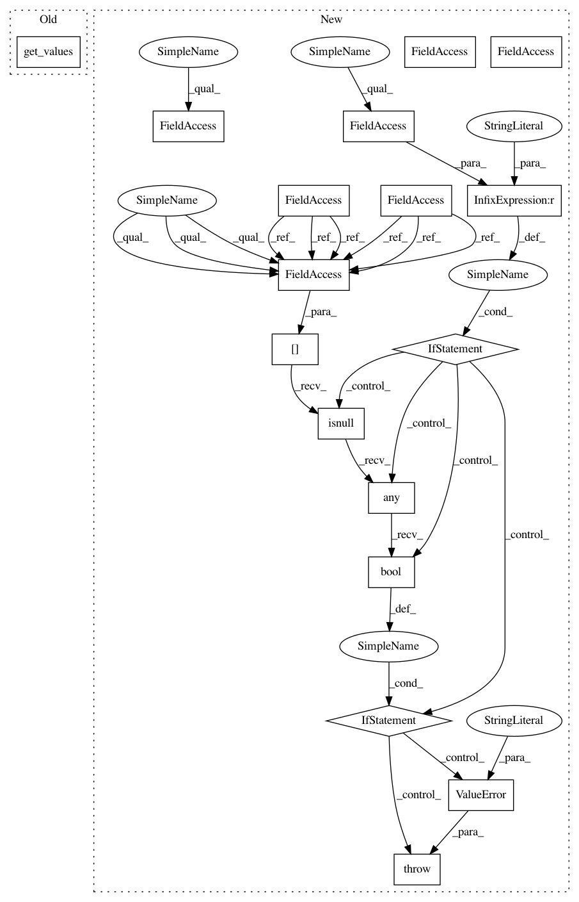

8971f18e58080a109abd54e2379a1686f4b661f6,category_encoders/backward_difference.py,BackwardDifferenceEncoder,fit,#BackwardDifferenceEncoder#Any#Any#,97
Before Change
mappings_out = []
for switch in ordinal_mapping:
values = switch.get("mapping").get_values()
column_mapping = self.fit_backward_difference_coding(values)
mappings_out.append({"col": switch.get("col"), "mapping": column_mapping, })
self.mapping = mappings_out
After Change
// if columns aren"t passed, just use every string column
if self.cols is None:
self.cols = util.get_obj_cols(X)
else:
self.cols = util.convert_cols_to_list(self.cols)
if self.handle_missing == "error":
if X[self.cols].isnull().any().bool():
raise ValueError("Columns to be encoded can not contain null")
// train an ordinal pre-encoder
self.ordinal_encoder = OrdinalEncoder(
verbose=self.verbose,
cols=self.cols,
handle_unknown="value",
handle_missing="value"
)
self.ordinal_encoder = self.ordinal_encoder.fit(X)
ordinal_mapping = self.ordinal_encoder.category_mapping
mappings_out = []
for switch in ordinal_mapping:
values = switch.get("mapping")
column_mapping = self.fit_backward_difference_coding(values, self.handle_missing, self.handle_unknown)
mappings_out.append({"col": switch.get("col"), "mapping": column_mapping, })
self.mapping = mappings_out
In pattern: SUPERPATTERN
Frequency: 3
Non-data size: 17
Instances
Project Name: scikit-learn-contrib/categorical-encoding
Commit Name: 8971f18e58080a109abd54e2379a1686f4b661f6
Time: 2018-11-07
Author: jcastaldo08@gmail.com
File Name: category_encoders/backward_difference.py
Class Name: BackwardDifferenceEncoder
Method Name: fit
Project Name: scikit-learn-contrib/categorical-encoding
Commit Name: 8971f18e58080a109abd54e2379a1686f4b661f6
Time: 2018-11-07
Author: jcastaldo08@gmail.com
File Name: category_encoders/polynomial.py
Class Name: PolynomialEncoder
Method Name: fit
Project Name: scikit-learn-contrib/categorical-encoding
Commit Name: 8971f18e58080a109abd54e2379a1686f4b661f6
Time: 2018-11-07
Author: jcastaldo08@gmail.com
File Name: category_encoders/helmert.py
Class Name: HelmertEncoder
Method Name: fit
Project Name: scikit-learn-contrib/categorical-encoding
Commit Name: 8971f18e58080a109abd54e2379a1686f4b661f6
Time: 2018-11-07
Author: jcastaldo08@gmail.com
File Name: category_encoders/backward_difference.py
Class Name: BackwardDifferenceEncoder
Method Name: fit